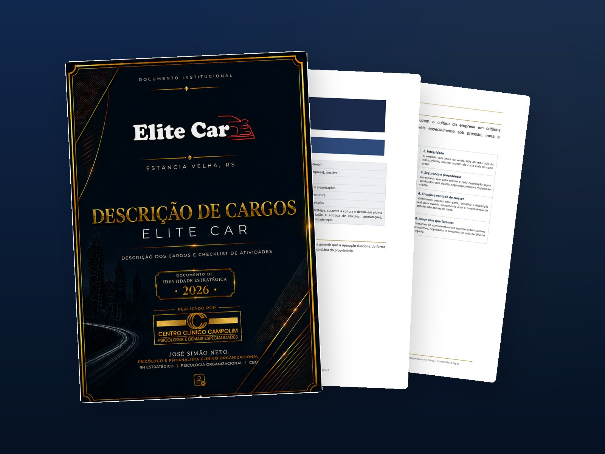

1. Cultura
Missão, visão e valores traduzidos em critérios concretos de decisão, não em frases de parede. É o que orienta a equipe quando a regra formal não alcança a situação.
E é exatamente esse o problema. O Manual de Estruturação Organizacional é o documento que tira a operação da sua cabeça e a coloca no papel: cultura, descrição de todos os cargos com classificação na CBO, checklist de rotinas e políticas internas em conformidade com a CLT, a NR-1, a LGPD e as normas do seu setor. Enquanto as regras existirem apenas na sua memória, cada saída de funcionário vira prejuízo, cada dúvida vira interrupção e cada processo trabalhista vira palavra contra palavra.

Empresas que crescem sem estrutura escrita não quebram de uma vez. Elas vão perdendo dinheiro em pequenos vazamentos diários, até que um deles vira processo.
Nenhum desses problemas é de pessoas.
Todos são de estrutura.
Não é um modelo genérico baixado da internet. É um documento construído sob medida, a partir da escuta do dono, da observação da operação e da análise da cultura real da empresa, por um psicólogo organizacional. Ele reúne, em um só lugar, três camadas que normalmente vivem soltas.
Missão, visão e valores traduzidos em critérios concretos de decisão, não em frases de parede. É o que orienta a equipe quando a regra formal não alcança a situação.
Descrição completa de cada cargo com base na CBO, missão da função, responsabilidades, competências e checklist de atividades em ordem cronológica: diária, semanal, quinzenal e mensal.
Conduta, jornada, uso de recursos, redes sociais, proteção de dados, saúde e segurança, atendimento e medidas disciplinares, ancoradas na CLT, na NR-1, na LGPD e nas normas do setor.
A primeira é para quem tem 60 segundos e quer o essencial. A segunda é para quem quer ver a fundamentação organizacional e jurídica de cada ponto, com a lei citada.
Oito motivos para ter um manual, em cartões rápidos. O suficiente para decidir.
Começar pelo rápido Etapa 2 · A fundoCada importância explicada, separada em organizacional e jurídica, com base legal.
Ir para o aprofundamentoCinco são de gestão. Três são de lei. Todos custam dinheiro quando ignorados.
Com cargo descrito e checklist cronológico, acaba o "achei que era o outro que fazia". A dúvida vira consulta ao documento, não interrupção do dono.
Menos retrabalho, menos ruído, mais entrega.
Enquanto tudo depende da sua presença, você não tem uma empresa: tem um emprego muito caro. O manual transfere o processo da sua cabeça para o sistema.
Você volta a trabalhar no negócio, não dentro dele.
O novo colaborador recebe o manual do cargo no primeiro dia e sabe o que fazer às 8h, às 14h, na sexta e no fechamento do mês.
Integração em dias, não em meses.
O cliente que voltar daqui a um ano vai ser atendido do mesmo jeito, mesmo que toda a equipe tenha mudado. Isso se chama marca.
A experiência do cliente para de depender da sorte.
Quando o combinado está escrito e assinado, a cobrança não é opinião do chefe: é comparação com o padrão acordado. O conflito diminui.
Avaliação de desempenho com critério, não com "achismo".
O regulamento interno materializa o poder diretivo do empregador e serve como prova documental em reclamatória trabalhista, inclusive para sustentar advertência, suspensão e justa causa.
Sai da palavra contra palavra. Entra o documento.
Desde 26 de maio de 2026, o gerenciamento dos fatores de risco psicossociais é obrigatório e autuável, para toda empresa com empregados, independentemente do porte.
O manual documenta a política e alimenta o seu PGR.
Tratamento de dados, prevenção à lavagem de dinheiro e dever de informação ao consumidor deixam de ser risco invisível e viram procedimento escrito e treinável.
Conformidade demonstrável, não presumida.
O diagnóstico inicial é gratuito e sem compromisso. Em uma conversa, eu mapeio o tamanho da sua operação, quantos cargos precisam ser descritos e o que a lei exige do seu setor. Só depois falamos de proposta.
Aqui cada ponto da Etapa 1 é destrinchado. Use as abas para alternar entre a importância organizacional e a importância jurídica. Clique em cada item para abrir.
Schein define cultura organizacional como o conjunto de pressupostos básicos compartilhados que um grupo desenvolve ao lidar com seus problemas, e que passam a orientar como seus membros percebem, pensam e agem. Quando esses pressupostos ficam implícitos, cada pessoa opera com o seu próprio manual invisível, e o resultado é decisão inconsistente sob pressão.
Escrever missão, visão e valores não é "organizar ideias bonitas". É construir um mapa cognitivo coletivo: alinhar percepção, linguagem e ação. A missão dá sentido ao trabalho, e pessoas se engajam mais quando percebem propósito, autonomia e impacto real naquilo que fazem (Deci e Ryan). A visão organiza expectativas e prioridades: a equipe performa melhor quando sabe para onde a empresa vai e, principalmente, o que ela não está disposta a se tornar.
Os valores são a camada mais prática de todas. Funcionam como critério de decisão em situações ambíguas, exatamente onde a regra formal não alcança. Culturas fortes não são as que têm mais regras, e sim as que têm valores claros e efetivamente praticados: eles alinham comportamento sem exigir controle excessivo e sustentam o padrão mesmo na ausência de supervisão direta.
Cultura que não está escrita é cultura que se perde na próxima contratação.
Quero estruturar a minha culturaDescrever cargos é mapear funções, responsabilidades e requisitos de forma que sirvam de base para recrutamento, avaliação de desempenho e plano de cargos e salários. Sem isso, a empresa contrata por intuição, avalia por impressão e remunera por negociação individual, três fontes garantidas de conflito interno.
No manual, cada cargo recebe: denominação e classificação na CBO, família ocupacional, subordinação hierárquica, cargos sob gestão direta e indireta, escolaridade desejável, missão do cargo, competências técnicas e comportamentais, e um checklist de atividades organizado por frequência, em ordem cronológica: rotina diária, semanal, quinzenal, mensal e funções esporádicas.
O efeito prático é imediato. O colaborador deixa de perguntar "o que eu faço agora?" e passa a consultar a própria lista. A liderança deixa de cobrar por sensação e passa a cobrar por comparação com o combinado. E a organização da estrutura de cargos impacta diretamente a produtividade, porque elimina sobreposição, lacuna e retrabalho.
Ninguém entrega o que nunca foi combinado por escrito.
Quero descrever meus cargosA padronização de processos operacionais faz com que o produto ou o serviço tenha mais qualidade e seja entregue com mais agilidade. É especialmente decisiva em empresas com alta rotatividade: quando o processo está no papel, a saída de uma pessoa não leva embora o método.
Padronizar não significa engessar. No manual, o checklist é explicitamente um guia: as tarefas são organizadas por frequência e prioridade, e devem ser cumpridas conforme a necessidade que se apresenta. O que se elimina é a variação aleatória, não o julgamento profissional.
Em setores em que a confiança é o ativo central, essa consistência deixa de ser diferencial e passa a ser condição de sobrevivência. O cliente não compara a sua empresa com o concorrente apenas pelo preço: compara pela previsibilidade da experiência.
Sem padrão escrito, a sua qualidade é uma média de improvisos.
Quero padronizar meus processosO custo real de uma contratação não está no salário: está no tempo de liderança consumido até que a pessoa produza sozinha. Sem material, esse tempo é gasto repetindo oralmente a mesma explicação a cada novo contratado, e cada repetição sai um pouco diferente da anterior.
Com o manual, a integração passa a ter roteiro. O colaborador recebe a apresentação da cultura, as políticas internas que precisa assinar e o checklist do seu cargo. A liderança deixa de ensinar do zero e passa a acompanhar e corrigir, que é um trabalho muito mais barato e muito mais eficaz.
Há ainda um efeito de retenção. Um plano estruturado de cargos e carreira ajuda a atrair profissionais qualificados e a reduzir a rotatividade, porque a pessoa enxerga com clareza o que se espera dela e como pode crescer ali dentro.
Contratar sem manual é começar do zero toda vez.
Quero estruturar minha integraçãoUm fundador que lidera e delega com base em uma missão bem definida aponta para um nível mais avançado de maturidade organizacional, em que processos, cultura e liderança distribuída substituem a centralização decisória. Isso reduz riscos, aumenta escalabilidade e fortalece a sustentabilidade do negócio no longo prazo.
O manual é o instrumento dessa transição. Ele define alçadas: o que a equipe decide sozinha, o que precisa de aprovação, a partir de que valor, e quem responde por cada decisão. Sem alçada escrita, ou o dono aprova tudo, e vira gargalo, ou não aprova nada, e perde controle.
Há também um efeito patrimonial pouco lembrado: empresa estruturada vale mais. Em uma eventual venda, sucessão familiar ou entrada de sócio, o comprador não está adquirindo apenas estoque e carteira, está adquirindo um sistema que funciona sem o antigo dono. Manual, cargos e políticas são exatamente a prova disso.
Empresa que só funciona com você presente não é ativo, é rotina.
Quero estruturar minha governançaA CLT reconhece o poder diretivo do empregador, e o regulamento interno é justamente o instrumento que materializa esse poder. É por meio dele que a empresa estabelece, de forma legítima e conhecida por todos, as regras de conduta que valem no ambiente de trabalho.
Em juízo, o efeito é direto: o regulamento interno serve como prova em eventuais ações trabalhistas, demonstrando que o empregador estabeleceu regras claras e buscou informar seus empregados. Atos praticados em contrariedade a esse conjunto de normas podem servir de salvaguarda à empresa, que passa a poder lançar mão do documento como prova de suas alegações, em vez de depender exclusivamente de testemunhas.
Para que isso funcione, porém, três condições precisam estar presentes: comunicação efetiva a todos os colaboradores, evidência documentada de ciência (assinatura física ou confirmação digital) e alinhamento com a legislação trabalhista vigente, incluindo a CLT e as Normas Regulamentadoras aplicáveis ao setor. Um manual bem redigido já nasce cumprindo as três.
Sem documento, a sua versão dos fatos vale o mesmo que a do outro lado.
Quero minhas políticas por escritoDemitir por justa causa sem base documental é um dos erros mais caros que uma empresa pequena comete. Em caso de dispensa por indisciplina, a violação de uma norma do regulamento é elemento probatório relevante, e o regimento é o que deixa claro quais condutas geram advertência, quais geram suspensão e quais podem chegar à rescisão por justa causa.
O manual estabelece essa gradação de forma expressa, em quadro: orientação verbal para desvio leve e pontual; advertência escrita para reincidência ou falta de gravidade moderada; suspensão para reincidência após advertência ou falta grave; e dispensa por justa causa nas hipóteses do artigo 482 da CLT.
Igualmente importante é o que o manual impede: a punição automática. A aplicação observa proporcionalidade, contraditório e individualização, preservando a dignidade do colaborador. Isso não enfraquece a empresa, fortalece. Medida desproporcional é justamente o que costuma ser revertida em juízo, com custo adicional.
Justa causa sem regra escrita costuma virar reversão com indenização.
Quero meu regime disciplinarEsta é a mudança mais relevante e mais ignorada pelas pequenas e médias empresas. A Norma Regulamentadora nº 1 estabelece o Gerenciamento de Riscos Ocupacionais e o Programa de Gerenciamento de Riscos (PGR). Com a Portaria MTE nº 1.419/2024, os fatores de risco psicossociais passaram a integrar obrigatoriamente esse gerenciamento, e a fiscalização com possibilidade de autuação começou em 26 de maio de 2026, aplicável a todas as empresas com empregados, independentemente do porte.
O descumprimento sujeita a empresa a multas proporcionais ao porte e à gravidade da infração, à interdição de atividades e à responsabilização civil e criminal em caso de acidente ou adoecimento ocupacional. Setores de alta incidência de adoecimento mental já vinham sendo alvo de investigação do Ministério Público do Trabalho antes mesmo desse prazo.
Na prática, é preciso identificar fatores como sobrecarga, metas excessivas, assédio e falta de autonomia; prevenir com ajustes na organização do trabalho, clareza de critérios e canais de escuta; oferecer suporte; e registrar tudo no PGR, ao lado dos riscos físicos e ergonômicos. Aqui, ter o manual escrito por um psicólogo organizacional deixa de ser preferência e passa a ser vantagem técnica: a psicodinâmica do trabalho (Dejours) mostra que a organização do trabalho pode ser fonte de sofrimento ou de realização, e que reconhecimento e suporte reduzem o adoecimento.
A fiscalização já começou. A sua política está escrita?
Quero me adequar à NR-1Toda empresa que mantém CRM, ficha cadastral, cópia de documento ou grupo de WhatsApp com clientes está tratando dados pessoais e está submetida à Lei Geral de Proteção de Dados. A pergunta não é se a LGPD se aplica, mas se existe política escrita demonstrando como ela é cumprida.
O manual estabelece o essencial em linguagem que o colaborador entende e consegue aplicar: finalidade (os dados são usados apenas para a negociação, o atendimento e o cumprimento de obrigações legais), acesso restrito (informações cadastrais e comerciais não são compartilhadas com terceiros sem base legal), sigilo mantido inclusive após o desligamento do colaborador, e protocolo de comunicação imediata de incidentes à liderança.
Isso protege em duas frentes ao mesmo tempo: reduz a chance de vazamento, porque a equipe sabe o que pode e o que não pode fazer, e reduz a exposição da empresa quando algo acontece, porque há evidência documentada de que a orientação foi dada e a ciência foi colhida.
Sem política escrita, a LGPD é um risco que você não consegue medir.
Quero minha política de dadosAlém das obrigações que valem para todos, cada ramo carrega normas próprias que o dono raramente conhece em detalhe e que quase nunca estão escritas em algum lugar da empresa. O manual pega essas normas e as traduz em procedimento que o colaborador entende e consegue seguir.
Quem vende para o consumidor final se submete ao Código de Defesa do Consumidor: dever de informação clara sobre o produto ou o serviço e garantia legal de trinta dias para bens não duráveis e noventa dias para duráveis, conforme o artigo 26. Comércios de bens de alto valor, como veículos, joias, imóveis e obras de arte, são pessoas obrigadas perante o Conselho de Controle de Atividades Financeiras, nos termos da Lei nº 9.613/1998: identificação do cliente e do beneficiário final, atenção a pagamentos em espécie acima de R$ 30.000,00, monitoramento de sinais de alerta e guarda dos registros pelo prazo legal.
Clínicas e serviços de saúde respondem às resoluções do conselho profissional, ao sigilo e à guarda de prontuário. Alimentação responde às boas práticas e à vigilância sanitária. Indústria, construção e logística têm Normas Regulamentadoras específicas, com treinamento e EPI documentáveis. E há ainda os contratos típicos de cada operação: a consignação, por exemplo, funciona como contrato estimatório, regulado pelos artigos 534 a 537 do Código Civil, em que o bem permanece do consignante até o pagamento.
Ignorância da norma não afasta a autuação. Procedimento escrito, sim.
Quero mapear meu setorUm documento profissional, diagramado, pronto para imprimir e para circular internamente. Nada de arquivo solto: é um manual com sumário, referências e controle de versão.
Um processo conduzido por psicólogo organizacional, com escuta de quem está na operação. Você não preenche formulário: você é entrevistado.
Conversa inicial gratuita. Dela saem a estratégia, o valor fechado e o prazo de entrega definido.
No mínimo quatro sessões online com a direção e os colaboradores-chave, com questionário estruturado sobre cultura, rotina e decisão.
Elaboração do manual: cultura, políticas internas, descrição de cargos e checklists, com fundamentação técnica e legal.
Apresentação da versão preliminar, ajustes com a direção e alinhamento fino de alçadas, comissões e regras.
Documento final diagramado em cerca de 30 dias, com orientação de como apresentar à equipe, colher ciência e manter o manual vivo.
O trabalho de consultoria organizacional é conduzido a partir do Centro Clínico Campolim, empresa da qual José Simão Neto é proprietário e diretor-geral, com sede própria em Sorocaba, no interior de São Paulo.
Pax animi, corpus plenum
O Centro Clínico Campolim reúne profissionais de psicologia e das demais áreas da saúde em uma sede própria na Av. Mário Campolim, 560, no Parque Campolim, uma das melhores localizações da cidade. É também a base a partir da qual são conduzidos os atendimentos clínicos, a orientação vocacional e os trabalhos de consultoria e estruturação organizacional para empresas.
Proporcionar a melhor qualidade e as melhores condições de trabalho aos nossos profissionais, para que possam entregar o seu máximo aos seus pacientes e clientes.
Ser um centro de referência em Sorocaba e região, e quiçá no Brasil, em atendimentos clínicos, psicoterapêuticos e das demais áreas da saúde.
Uma conversa para entender a sua operação e dizer, com honestidade, se o manual faz sentido para o seu momento. Sem compromisso e sem discurso de venda.